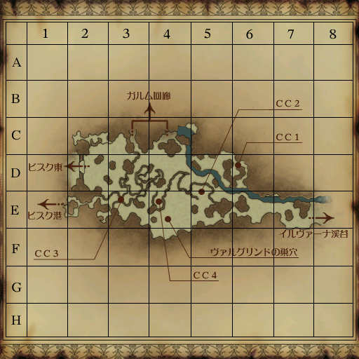

一覧採掘ガイド：レクスール・ヒルズ(War_Age)
レクスール・ヒルズ(War_Age) の掘り場 8 か所（岩 31 個）。
掘り場の地図

#1緑の点が岩、#番号が掘り場（岩 3 個以上）。点にマウスを合わせると岩の名前。
掘り場
地図の緑の点が岩、赤がプレイヤーを襲うモンスター、灰色が襲わないモンスターの出る位置。
#1（岩 24 個）
- 岩の数
- 24 個
- 広さ
- 100 m
- 間隔
- 8 m
- 再出現
- 60 秒
- 岩の Lv
- 1〜31
出るもの
| アイテム | 1 周 | 1 時間に湧く量 |
|---|---|---|
| 銅鉱石 | 17.25 | 1035 |
| スズ | 9.6 | 576 |
| 鉄鉱石の破片 | 6.06 | 363.6 |
| 銅鉱石の破片 | 3.87 | 232.2 |
| 鉄鉱石 | 0.3 | 18 |
岩
| 出る岩（出るたびに抽選） | 数 |
|---|---|
| 銅の岩石 Lv 3〜4（70%）／スズの鉱石 Lv 15〜16（30%） | 11 |
| スズの岩石 Lv 15〜16（70%）／鉄の鉱石 Lv 25〜26（30%） | 9 |
| 銅の鉱石 Lv 1〜2（70%）／銅の岩石 Lv 3〜4（30%） | 3 |
| 鉄の鉱石 Lv 25〜26（70%）／鉄の岩石 Lv 30〜31（30%） | 1 |
近くのモンスター
届くモンスターはいない。
小さな掘り場（岩 1〜2 個）
位置は、地図の絵で見たときの一番近い番号付きの掘り場からの向きと直線距離。
| 掘り場 | 岩 | 位置 | 出る岩 | 再出現 | 1 周で出るもの | 近くの敵 |
|---|---|---|---|---|---|---|
| #2 | 1 | #1 の左 613 m | オリハルコンの岩石（オリハルコン鉱石の破片） Lv 95〜96（85%）／オリハルコンの岩石（オリハルコン鉱石） Lv 98〜99（15%） | 15 分 | オリハルコン鉱石の破片 1.1、オリハルコン鉱石 0.1 | なし |
| #3 | 1 | #1 の左 617 m | オリハルコンの岩石（オリハルコン鉱石の破片） Lv 95〜96（85%）／オリハルコンの岩石（オリハルコン鉱石） Lv 98〜99（15%） | 15 分 | オリハルコン鉱石の破片 1.1、オリハルコン鉱石 0.1 | なし |
| #4 | 1 | #1 の左 579 m | オリハルコンの岩石（オリハルコン鉱石の破片） Lv 95〜96（85%）／オリハルコンの岩石（オリハルコン鉱石） Lv 98〜99（15%） | 15 分 | オリハルコン鉱石の破片 1.1、オリハルコン鉱石 0.1 | なし |
| #5 | 1 | #1 の左 576 m | オリハルコンの岩石（オリハルコン鉱石の破片） Lv 95〜96（85%）／オリハルコンの岩石（オリハルコン鉱石） Lv 98〜99（15%） | 15 分 | オリハルコン鉱石の破片 1.1、オリハルコン鉱石 0.1 | なし |
| #6 | 1 | #1 の左 554 m | オリハルコンの岩石（オリハルコン鉱石の破片） Lv 95〜96（85%）／オリハルコンの岩石（オリハルコン鉱石） Lv 98〜99（15%） | 15 分 | オリハルコン鉱石の破片 1.1、オリハルコン鉱石 0.1 | なし |
| #7 | 1 | #1 の左下 595 m | オリハルコンの岩石（オリハルコン鉱石の破片） Lv 95〜96（85%）／オリハルコンの岩石（オリハルコン鉱石） Lv 98〜99（15%） | 15 分 | オリハルコン鉱石の破片 1.1、オリハルコン鉱石 0.1 | なし |
| #8 | 1 | #1 の左 600 m | オリハルコンの岩石（オリハルコン鉱石の破片） Lv 95〜96（85%）／オリハルコンの岩石（オリハルコン鉱石） Lv 98〜99（15%） | 15 分 | オリハルコン鉱石の破片 1.1、オリハルコン鉱石 0.1 | なし |